Wishing more for creativity, I wish to pursue a career involving my passion in graphic design and front-end work. I am a tea and boba enthusiast! In additional to this, I also love baking, gaming, and takoyaki. Especially takoyaki!
Walk with Us is a three poster series for a fictional dog charity to promote awareness for homeless pets.
The story behind the event is about 2 millions homeless dogs are populated in Canada and at least 600,000 dogs are euthanized every year as too many comes into shelthers and too few people are considering adoption.
The objective of the design is to educate and inform the public about the high numbers of homeless dogs. While the event is a serious topic, my goal is to also include a fun element for younger audience.
The Process
These are the orginal sets for the project. It features dogs as the main focus. At first, the name was the event was called "Walk with Me" to represent a friend who wants some company. This was later changed. The colour theme is yellow, to represent happiness, positivity and optimism; green, to represent nature, harmonry and safety; and lastly, grey, to reprsent a formal and sophisticated event.
The End Product
The name was changed to "Walk With Us" to include everyone. The title is used with a hanging letter font to symbol a connection between the owner and the pet, also known the a leash. To make the text to stand out from the photograph, I use the corresponding colours from the image and adjusted it to semi-transparent. The floating deco was kept from the original idea to show personality and to the show the fun element that I want originally.
Checkpoint
The Narrative
Checkpoint is a fictional company aim to target students to raise esteem and boost confidence. The message of this project is show that all the focus on success makes us forget the learning experience and process.
The objective of the project to create a magazine and website that allows students to find tips and suggestions for mental health and encourage study habits.
The Process + End Product
This is the website for Checkpoint. My idea is to have it in a grid for organization. As a troublesome student, too much information on a page could be overwhelming. Thus, I wanted to keep it fairly simple and well labelled. The color scheme is mostly black to the younger generation often prefering a darker theme. A tint of brown was added to relects colour of desks and tables. This also symbolize the feeling of stability, relaxation and warmth - The colour of wholesome. Bright images are used to contact this. I also wanted to combine different medias rather having only pictures or text on the page. Different components of it is inserted for unquiness.
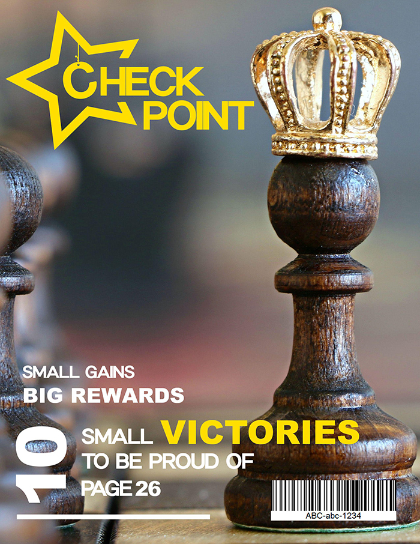
This is the maganize design of Checkpoint. The role of pawn is purposely used to symbolize the process and meaning of project. From the rules of chesss, the pawn needs to take one step at a time to reach the other side of the board. There will be difficult obstacles (other chess pieces such as knights, rooks, etc) standing in its way. However with great motive. it too, can reach great success. The image is off-center to stand out and also to represents the number 1.
Betty Su Business Card
This is a fictional business card for a babysitter company. The idea was to create a fun, creative personalize card.
The Process
This is the design of the business card. This project was to allow me to play with illustrator. Image was hand drawn first and then later was traced into program. As it is for a babysitter company, I want the card to be playful with some sort of cartoonish character to appeal to the children. Here, I created an artist cat to represent that creativity that is found in kids. As the cat is bright, I contact it with a blue background to allow it to stand out. Here I was face with a problem with it being too flat. To fix this, I added shadows for it to appear more '3-D'.
Cart
The Narrative
CART is a fictional company that provide and bring lunches to a business. It is a catering service that provide a weekly prepared meals that the user can select from. It was a group project in collaboration with Janet Antonio, Jessica Kozma, Cara Crowley and Matt Tecson. For this project, we followed agile project management methodology
Duties
I was in charge of designing the look and feel of the website based of a colour theme chosen by the group. While I was doing this, I was also in charge of the about page, and the calendar grid portion of the order page. During this project, communication was very important as we needed to know information regarding tasks that completed, in progess and items that needed to be listed in the back log. We had weekly team meetings, and outside of class time, went on commuicated via Facebook group messager. Work was documented via Google Drive.
The Process
Design
The idea of CART is to appear welcoming to its customers. Bright colours are used to make the website exciting promote hunger. My purpose is design the website mostly in use of HTML + CSS. CART is mainly contained of high quality pictures. Added decoratives could slow the site down and with this in mind, I wanted to design it in the concept of simplexity and utiliablity.
How it Works Page
The problem of this page was the amount of content. We were faced whether to add more content to balance it out or resizing the image to making it smaller with the text. To counter this, content was placed into an accordion for user interactivity and to balance the page out.
Order Page
Meal images were placed in a grid for organization and readability. Reflections were created by css, in case, users decided to save images, the images themselves will be saved without mirror reflection.
A tooltip is added to each image to reduce the amount of information displayed for the user. This allows the user to read only the specific meal item. My goal is to have page containing as much information without having it be overwhelming.
Front-end for Beginners
The Narrative
Front-end for Beginners is a blog about front-end development, designed for beginners to learn how to code with languages such as HTML, CSS, and Javascript. It was a socail media group project in collaboration with Anastasiia Korshunova, Kate Venedyukhina and Takako Nakajima.
My role for this project is manage the content that placed on the website. Content is managed via weekly calendar and articles are written prior agreed deadline. Some content I write is beginners topics for coders such as the introductions to HTML and CSS, some basic rules to originizing your CSS sheets, etc.
Main requirement for the project is to keep up-to-date via social media such as Facebook, Twitter, Telegram, Instagram to share its content
Acquisition Strategy
Invited classmates and friends to like our content for initial audience
Created mascot, 'Dr. Ned', as helping assistant and to appeal to younger audience
Interacted with audience and other related coding business and influencers for exposure via social media
Future Plans
Add more step by step live tutorials
Add video tutorials
Boost daily acitivity on social media
Other Potential Platforms
Custom app
Youtube for video tutorials
Slack/Discord to promote community interaction
Tiffany's Hair Salon
The Process
Tiffany's Hair salon is a web advertisment where I play around with illustrator and CSS. It was an assignment to produce an interacting web advestisement using CSS animations. I used a bootstrap slideshow with functioning arrows to simulate a game menu. It is animated with a jello effect for a cute-y feel.
League of Legends Terminology for New Players
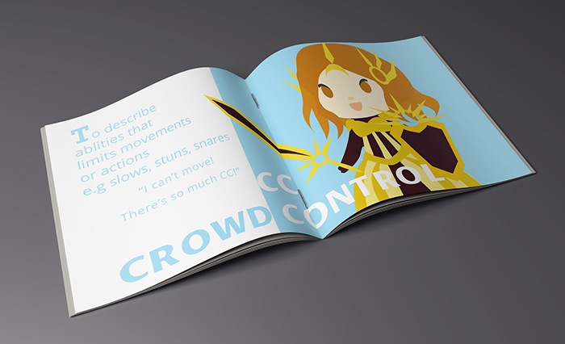
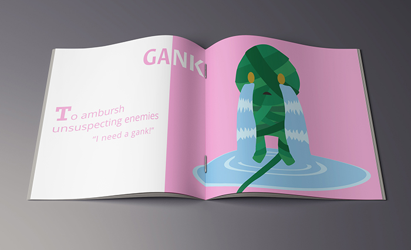
The Narrative
League of Legends is a multiplayer online battle arena game developed by Riot Games. It was released in 2009 and has grown in popularity with active fanbase and with over 67 million people playing the game per month. like other games, League has its own language that only serves to confuse newcomers. Inspired by my favorite game, I created a booklet helping new players with basic League Terminology.
The Process
Pictures were hand drawn before tracing into illustrator. Characters were chosen based of corresponding term. I chosed the background colour by using the complementary of character(s)'s main colour and adjusting it lighter to prevent it from overpowering. To make the text POP, I divided it on the background and changing its colour to white.
Fruity Bar Speciality Chocolate
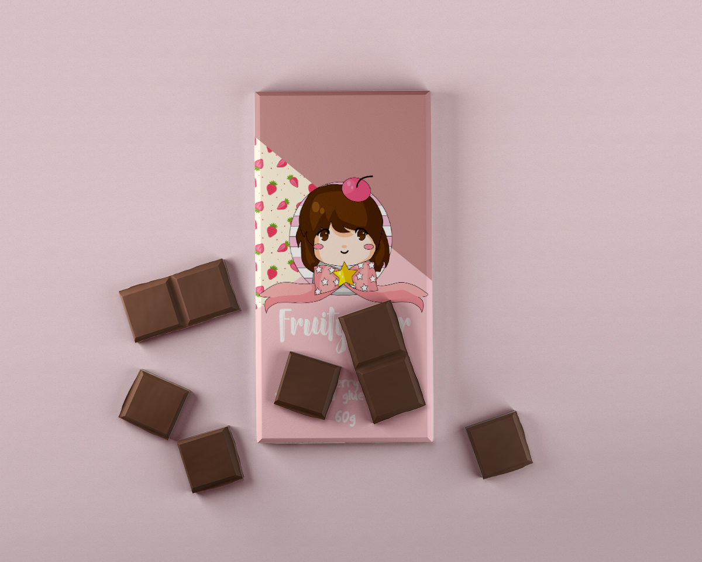
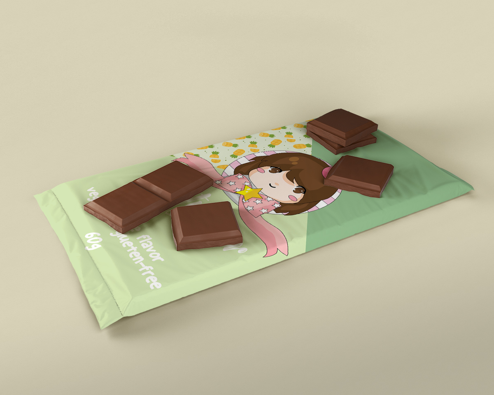
The Narrative
Fruity Bars is a fictional speciality chocolate bar brand. Its chocolate is infused with pieces of fruits and is vegan and gluten-free! I designed the packaging inspired by this fruitty summer pattern. For this project, I wanted to incorporate and simulate a given part into my design. The packaging aims to be a colourful and fun!
The Process
The logo was hand drawn before inporting it into illustrator and tracing it. I wanted to insert the fruit deco into the packaging without making the design too busy. To fix this, I placed it between solid colours to balance it out. The deco is center between the two colours to represents that the fruits are hidden in the chocolate bar. I finalized it with a playful font with added information with the product.
Bone Booklet
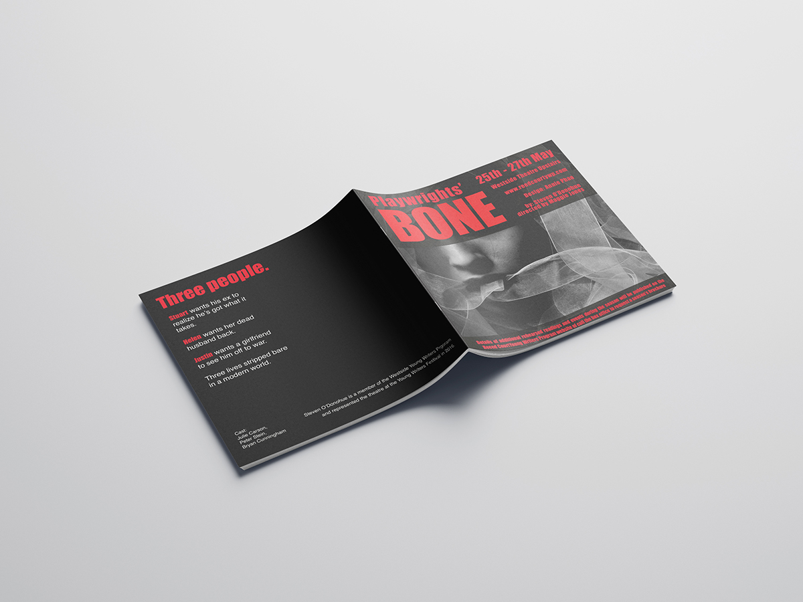
The Narrative
A cover design assignment created for fictional play event Bone. The requirements are to have all information listed and usage of only black and white images.
The Progess
This project is mainly focused on hierarchy. I played around with font sizes and enlarge certain words to be viewed first. Inportant information is made as red test and white is additional context. Any text is placed on solid black background for legibility. Main photo is chosen to display mysterous and horror theme to play.
Om Nom Nom Poster
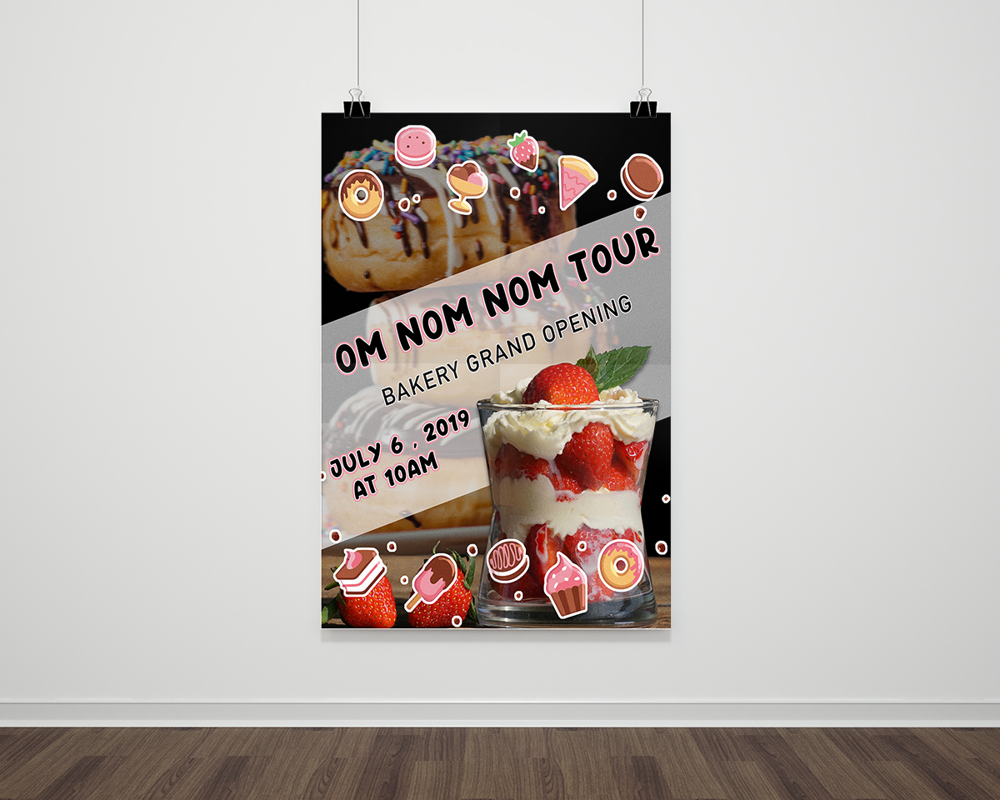
The Narrative
Om Nom Nom is a fictional bakery in need of a poster promoting its grand opening.


 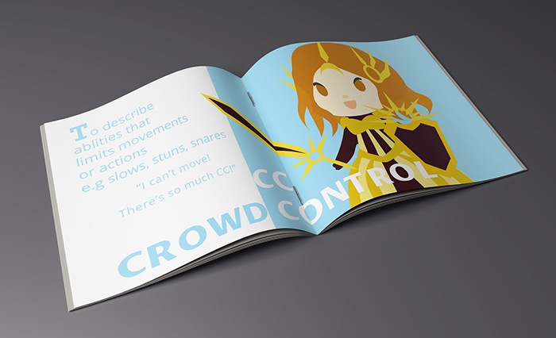
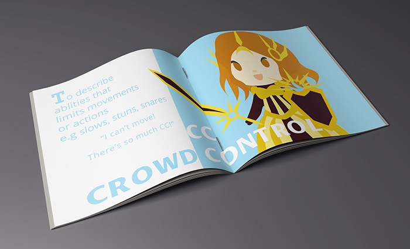
 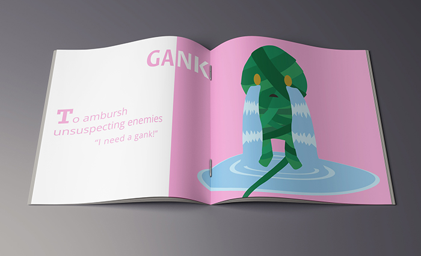
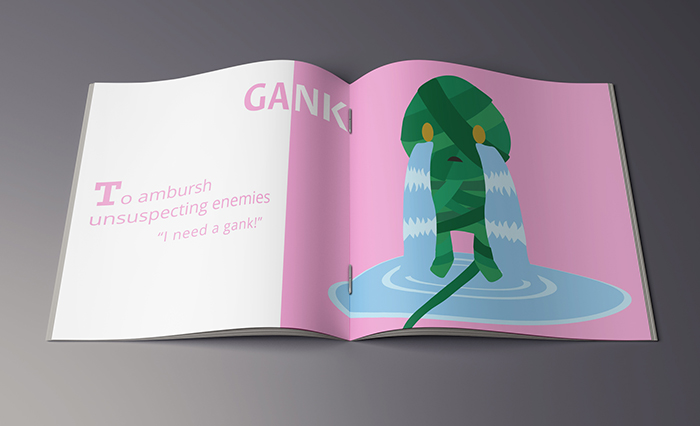
 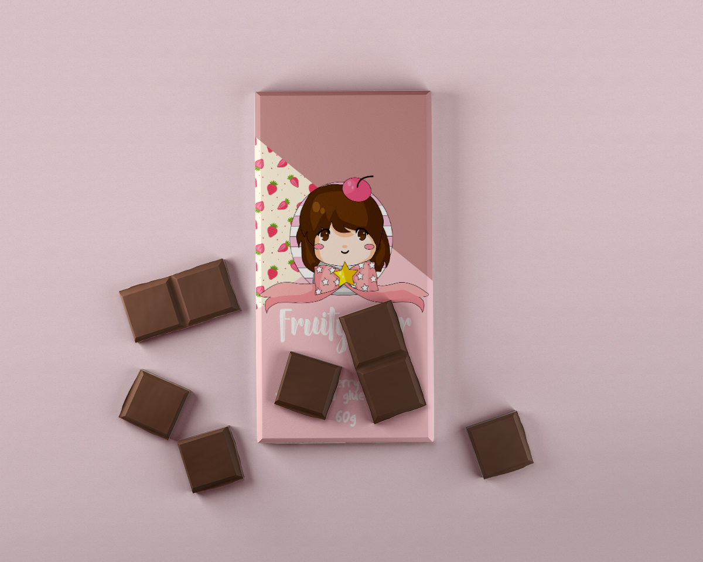
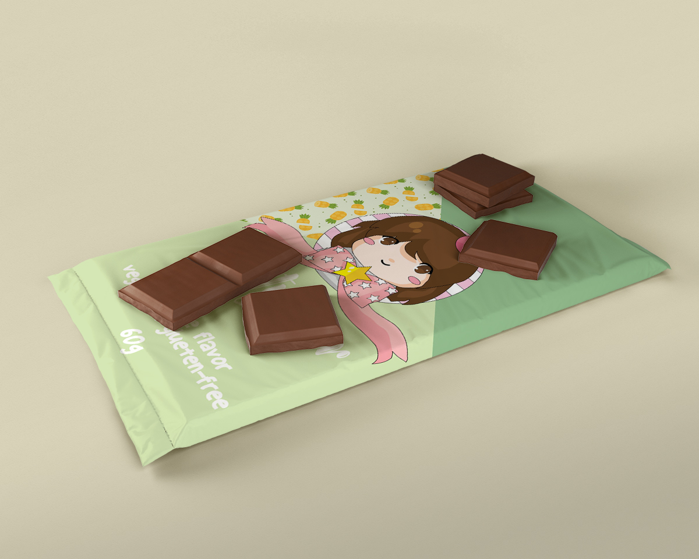
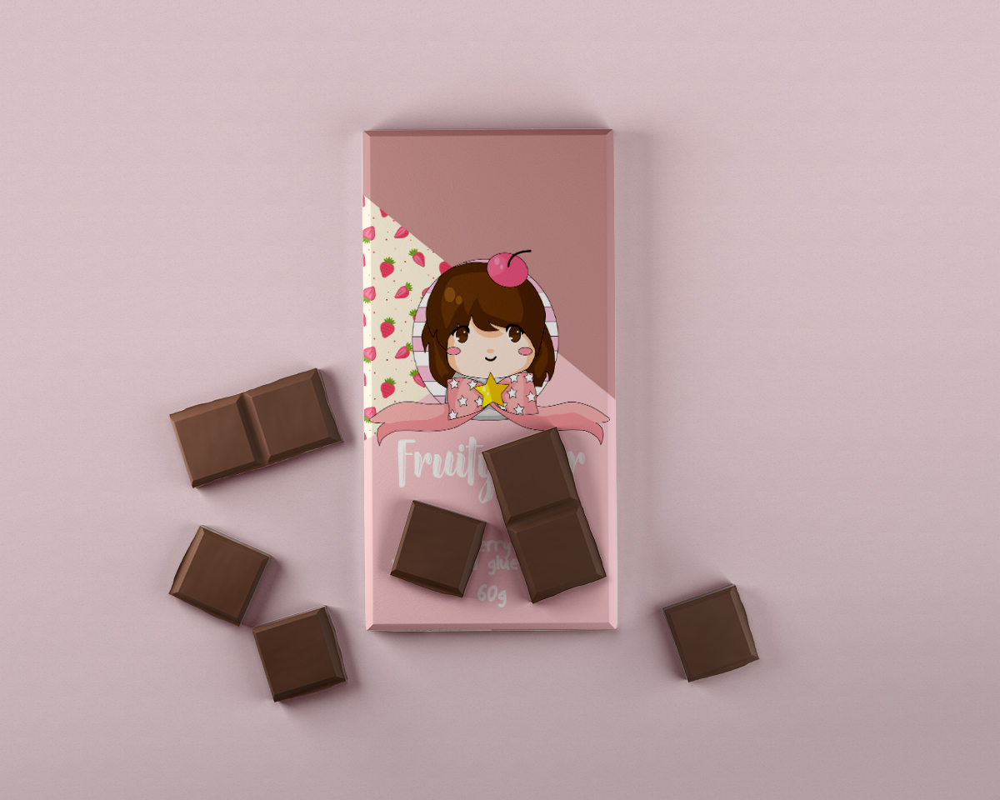
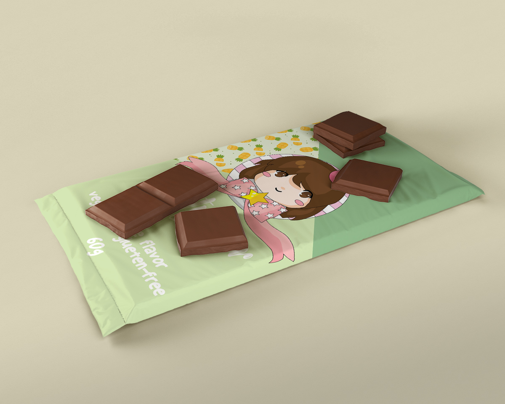